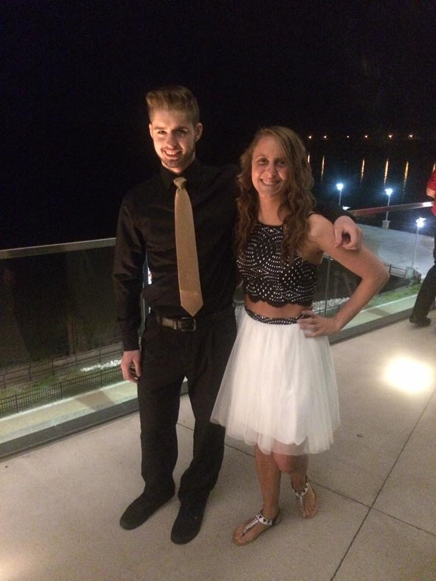
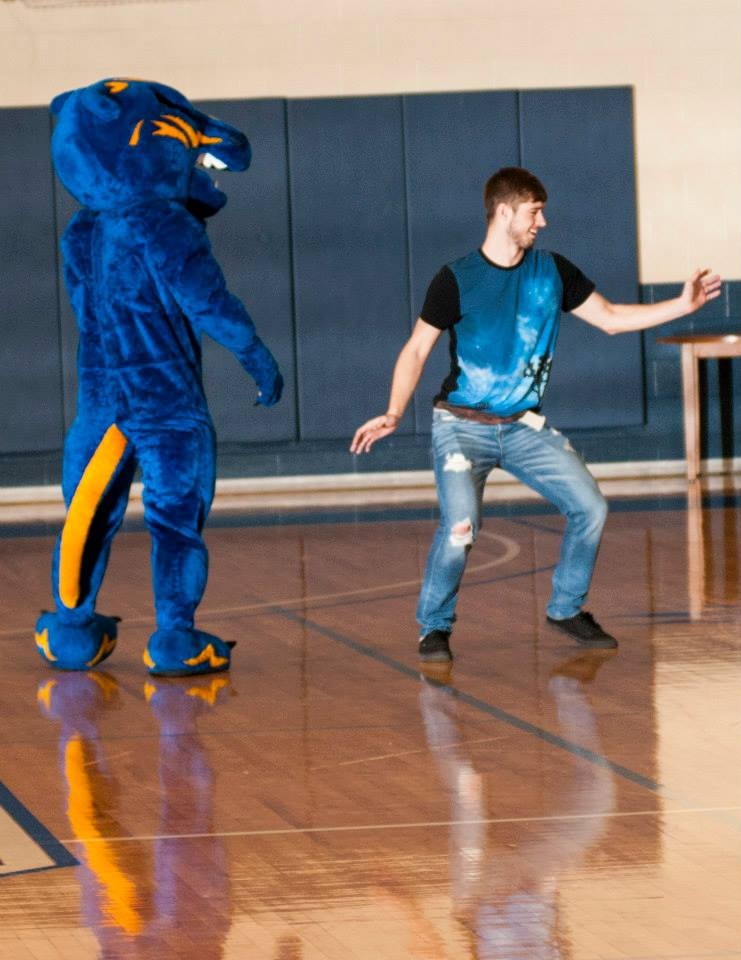
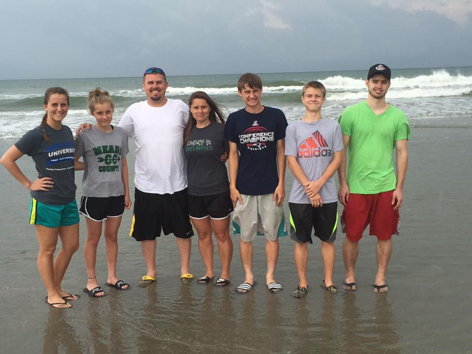

Dylan Massey (born April 13, 1994) was brought up in a small city known as Brandenburg, Kentucky. Raised by Tammy West (mother) and Richard West (step-father), he was the oldest out of the five children in his household. His biological father passed away on March 25, 2000, when Massey was five years, old due to a car crash. However, his step-father has always treated him as one of his own so he always had a father figure in his life. On top of living in a household of 7 people his family also had 10 family pets, with 6 of them being dogs and four of them being cats. 
Dylan Massey attended Meade County High School from the years 2008-2012. During his years there he maintained fairly decent grades, graduating with a 3.5 GPA at the end of his senior there. Massey also participated in a couple of different sports, however, he found most of his success out on the track starting at the beginning of his sophomore year. While he was a  stranger to the sport, Massey quickly found that he was a strong sprinter and put his focus on training for the 400 meter dash throughout his last few years of high school. By the end of his senior year he obtained a personal record of 51.08, being the current fastest on his team in the event and only a couple seconds off the school record. Massey was also able to make it to state every year and managed to place 8th in the 3200 meter relay his senior year. After graduating from high school, he went on to attend college in Owensboro, Kentucky.
Massey began attending college at Brescia University in the fall of 2012 and still continues to go there as a 5th year senior. Being the first in his family to ever attend college it was a new adventure that he was prepared to take on. From the start he decided to pursue a major of Computer Science with and Emphasis in Business. While attending Brescia he has continued to run throughout his time there, however, he did not just focus on the 400m dash as he did in high school. He also took up other events including the 200 meter dash and the 800 meter dash where he’s found some success. Massey has been able to set school records in multiple events at Brescia and even won  conference championships in a few of the events. On top of being a college athlete he still maintained focus in his classes and was able to maintain a decent GPA throughout his time in college. Massey should be graduating from Brescia with his degree in December of 2016.
Other useful links...


Brescia

Owensboro

Telephone